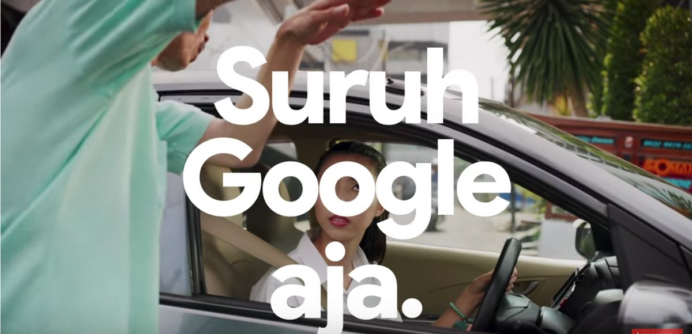
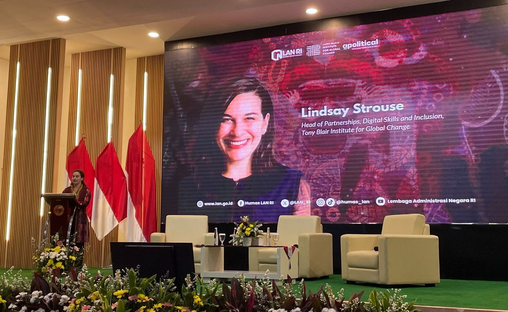
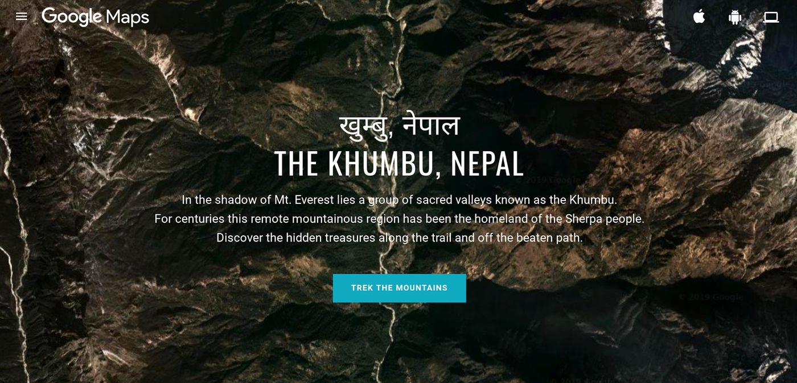
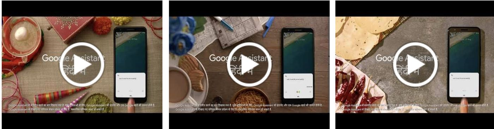
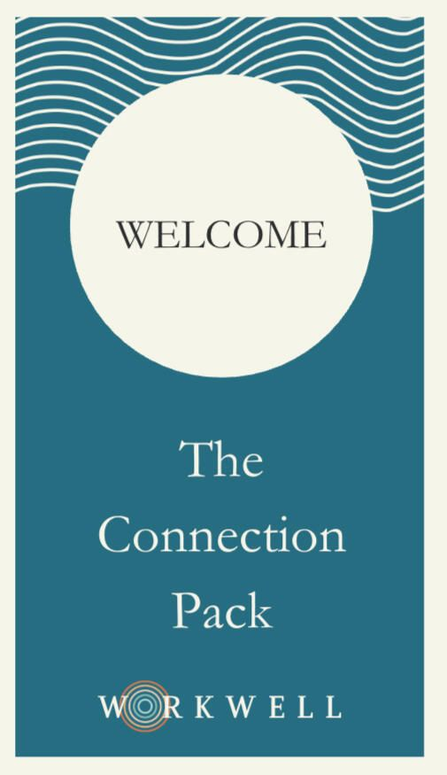
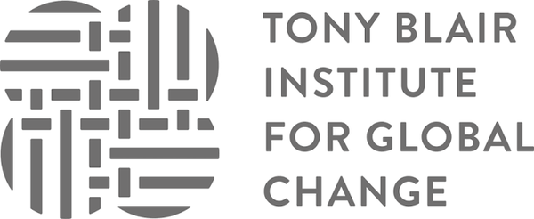
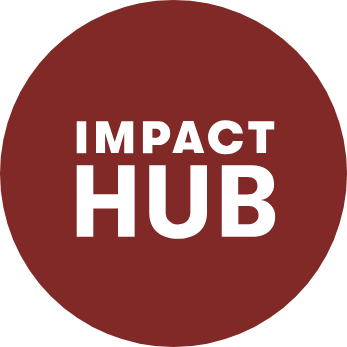
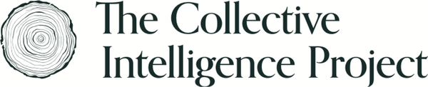
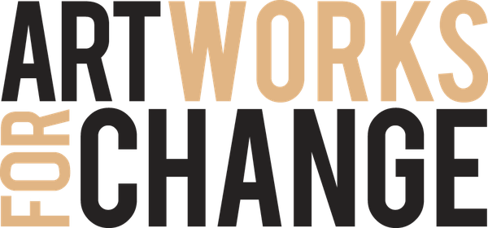

Technology moves faster than people can make sense of it. For 13 years, I've studied how people live with technology, building educational programs so fewer are left behind, and making new ideas and products meaningful to the people they're designed for. Lasting adoption happens when sharp insight, ready-made solutions and good narratives come together. I partner with founders and organizations to make that happen.
01
Go-to-market and insight
Discovery, value proposition, positioning and messaging for new markets and products
02
Partnerships and programs
Multi-stakeholder strategy, design and operations, internal culture change
03
Marketing and communications
Strategy, thought leadership and community
Selected work

Go-to-market & insight · Google Assistant, Asia Pacific
Made Google Assistant's most efficient campaign in the world
People didn't know when or why they'd use a voice assistant, and Google wasn't sure either. I led research to map audiences and daily routines, and built a model that ranked local features by importance, satisfaction, current tech habits, openness to AI and how often people did the task. The insights shaped 5 campaigns and partnerships. Indonesia's Suruh Google ajaRoughly, "just get Google to do it." ran at $1 per monthly active user, the most efficient Assistant campaign globally.

Partnerships & programs · Tony Blair Institute, 10+ countries
Built a $1.3M program to bring AI and digital skills to public servants
Governments wanted to move fast on AI and digital services, and their teams needed skills that fit their real work. As Head of Partnerships for Digital Inclusion, I led a team designing, funding and delivering digital skills, AI education and connectivity programs, with partners including Khan Academy, Cambridge, DeepMind, Intel, Raspberry Pi Foundation and Apolitical. The result was a $1.3M program reaching 5,000+ civil servants, plus political commitments to train 200,000 more.

Marketing & communications · Google Maps Street View
Took 5 million armchair travelers to the foot of Everest
People used Google Maps every day but rarely thought of Street View as a way to explore. I launched a website and film about the Sherpa community and culture of the Khumbu Valley, backed by PR, media spend and a donation to a local NGO. It drew 5M video views, a 43% lift in ad recall and a 28% lift in brand interest.
Partnerships & programs · Google Ads, small and medium businesses
Grew a customer events program from nothing to $10M a year
Google's small business marketing went almost entirely to finding new customers, while competitors fought for the ones it already had. I launched a global events program that mixed executive relationship-building, practitioner training and hands-on setup, and built the creative, infrastructure and measurement behind it. Its budget grew from $0 to $10M a year, it touched $2B+ in annualized revenue, and causal impact analysis showed it increased spend per client.

Go-to-market & insight · Google Assistant, India
Grew Google Assistant use among Hindi speakers
Smartphones weren't built for Hindi speakers, so millions of people were missing products that could help them. I led the segmentation, positioning, use-case and messaging research behind Google's first Hindi-language Assistant campaign, which grew monthly active users by 15% and 28-day retention for promoted features by 23%.
Ghostwrote the stories behind dozens of Google Doodles
Google Doodles spark curiosity about people, places and moments most people would never think to search for. I wrote the stories that ran alongside dozens of them, from aviator Amy JohnsonHer Doodle marked what would have been her 114th birthday. to Bastille Day. Each story earned an average of 50 press mentions, including The Telegraph, The Independent and Time.
Go-to-market & insight · Google Next Billion Users
Found where AI could help smallholder farmers, and turned it into pilots
Farming lifts incomes in the poorest communities, but smallholder farmers struggle with yields, information and access to capital. I ran the market landscape, trends analysis and in-depth interviews behind Google's vision for AI and consumer tech in farming communities, in a 3-day sprint that set the direction and led to 2 new partnership pilots.
Helped house Ukrainian refugees within weeks of the invasion
When people fled Ukraine in 2022, they needed safe homes faster than official systems could find them. I co-founded Find-A-Host, built a 30+ person volunteer team and a community model that could scale, and launched partnerships including Airbnb.org. Together we housed 1,000+ refugees within weeks and earned national media coverage.

Partnerships & programs · Workwell, founder
Built Workwell to put energy and connection into the workday
Most workplace wellbeing support sits outside the workday, so the people who need it most rarely use it. I founded Workwell and built two products, evidence-backed card decks and a discovery quiz, plus live workshops for public and private sector teams, which average 85% satisfaction.
Marketing & communications · The Happiness Foundation, 2020
Produced a global festival on the science of happiness
As the world shut down during COVID-19, people were looking for evidence-based ways to look after their wellbeing. I led marketing and production for the first Happiness Festival, a free 3-day virtual event with 50 scientists and thinkers, and secured and led interviews with Misty Copeland, Laurie Santos, Maya Shankar and Robert Waldinger. The talks have 60,000+ views.
I spent nearly a decade at Google leading research and marketing programs that helped SMBs and startups grow, and helped shape a new category of consumer experiences around conversational AI. Since then, I've worked with governments, multilaterals and technology leaders to design and advise on technology and AI education programs. Across these experiences, my work has centered on understanding where people, culture, technology and markets are today and where they're heading, then translating those insights into the strategies, systems and narratives that help organizations grow.
I'm particularly interested in emerging models of work, living and education that give more people the agency to shape their own futures, as well as the people and ideas creating better ways for us to connect with one another and the world around us.
I come from a family of helpers, which shaped a simple belief: we're here to be good people, learn from others and do good things. That belief has taken me from a small town to living and working across much of the world, always on the hunt for a good story. Along the way, I've had fun launching products and campaigns, and leading community-led ventures exploring eclectic leadership, happiness as a design principle, and safe housing for displaced people. I've also made a podcast about life's biggest decisions, and teach yoga, breathwork and mindfulness-informed workshops at studios, retreats and corporate offsites.
I've always been a bit of a squiggly-line person, following ideas across disciplines and connecting dots that others might miss. My red thread is making sense of the people, experiences and world around us, then finding something useful to do with what I learn.
If you're looking for a speaker, a strategic partner for a new project, or someone to jam on an idea with, I'd love to hear from you.
Trusted by




Speaking and writing
I've spoken and written frequently about 21st-century skills, purpose, responsible insights and marketing practices, and partnering for impact. I'm available for keynotes, workshops, panels and writing commissions.
KeynoteEconomics of Mutuality
ModeratorCogX 2025Skills for the Future
Guest lecturerBayes Business SchoolData-driven insights and purpose
EssayGood friction
Steering committee · PanelistITU AI Skills Coalition
FacilitatorImpact HubTogether for Wellbeing Accelerator